Frequency/Phase Movement Analysis by Orthogonal Demodulation (Part 1) - Basic Theory and PLL Lock-in Trend Analysis by Waveform Digitizer
Hideo Okawara, Verigy
Paper-ID: 120830 September 2009
Preface of the Papers
In mixed signal system-on-a-chip (SOC) testing, there are lots of needs to measure phase and frequency change of signals. For instance, in a PLL circuitry, the lock-in time is one of the most typical test items. In a read/write channel device for hard disc drives, small pulse shifts for write pre-compensation are tested. Waveform digitizers or samplers that are typical mixed signal analog pieces of equipment can measure such changing frequency/phase with sophisticated digital signal processing. The sampled data is processed with the orthogonal demodulation method (ODM), which can extract the instantaneous phase of the test signal and analyze the frequency/phase changing trend. Swept frequencies, phase-shifted clocks, shifted pulses or edges are analyzed.
There are lots of intriguing applications available with this method so that this paper will be separated as following issues.
- Basic theory and PLL lock-in trend analysis by waveform digitizer
- PLL lock-in trend analysis by RTSPU empowered digitizer
- More application examples of ODM
- ODM application by wide-band waveform sampler
The first issue will describe the basic theory of operation of ODM, and the actual application about PLL lock-in time analysis will be explained step by step. The RTSPU empowered digitizer "MB-AV8" is actually very good at the ODM. The application of "MB-AV8" is precisely described in the second issue. The ODM can be applied to more frequency/phase changing phenomena. In the third issue, you will see applications of abrupt frequency change, spread spectrum clocking (SSC), clock pulse shift and clock edge shift. The ODM can be used in under-sampling condition. In the fourth issue, you will see an application to SSC in the serial ATA clock.
Introduction
There are many kinds of mixed signal SOC devices found in digital consumer appliances, such as optical disc drives (ODD), hard disc drives (HDD), TV's, cameras and wireless devices. Almost all mixed signal SOC's contain phase-locked-loop (PLL) circuits inside. From the testing point of view, a PLL has various important factors such as the frequency capture range, the lock-in time and its stability. In order to test these items, SOC testers are required to have precise time interval measurement functionality, which can be achieved by time stamp measurement. In hard disc drives there is a read/write channel device located right after the magnetic head amplifier. New technology high-density magnetic recording systems need some tweaks of the pulse positioning that is called write pre-compensation to decrease the peak shift caused by the magnetic inter-symbol interference. In measurement of small shift of pulse location or pulse-edge, the precise time measurement is indispensable.
Precision time interval analyzers (TIA) would be the first resource to be reminded; however it is expensive and may not be available in the tester on hand. In this situation, test engineers need to find alternative instruments that can do time measurements. Since a waveform digitizer or a sampler is usually integrated in the mixed signal tester, it could be a possible option. It records the whole waveform of the target signal. Since the waveform carries entire information of the test signal, the time related information could be extracted out of the waveform data.
Frequency/Phase Movement Analysis
Clock Signal
In order to analyze how frequency/phase parameters in the clock signal are changing, you need to observe instantaneous values of it. The essential characteristics of the clock signal are contained in the fundamental frequency so that the clock can be simplified as a sinusoidal waveform as follows;
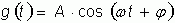
(1)where ω is the (angular) frequency and φ is the phase offset of the test signal.
Instantaneous Phase Analysis
You need to extract the instantaneous phase ωt+φ in the equation (1). If you can create the sin() or imaginary part of the signal (1), you can calculate the instantaneous phase of the signal using the mathematical function arctangent as follows. (Arctangent is atan2() in C programs.)
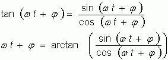
(2)One of the methods to derive the sin() part from the cos() part is the Hilbert transform. It is a very sophisticated method to generate the imaginary part of the signal by applying the Hilbert transform in the time domain or by applying the fast Fourier transform (FFT) and the inverse FFT (IFFT) in the frequency domain. However, the design of good Hilbert transform filter is difficult. The FFT&IFFT method requires the number of data points be restricted to 2n for short processing time, and the processing is cumbersome. Furthermore in order to estimate the reference phase (the center frequency), since the unwrapped instantaneous phase data is distributed in an extremely large range, it is not so good when estimating a regression line. (Phase unwrapping will be discussed later.)
Orthogonal Demodulation Method (ODM)
Another method to derive the instantaneous phase of the test signal is an application of orthogonal demodulation. The sampling frequency of the digitizer and the number of data points are known so that you can create ideal reference signal data arrays in the computer with using math functions of cos() and sin(). They are simple sinusoidal waveform arrays of the reference frequency ωr that can be defined by yourself as you like. Then the test signal g(t) in the equation (1) are multiplied by the reference signals as follows.
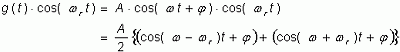
(3)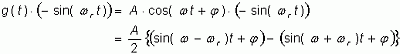
(4)In Equations (3) and (4), the multiplication splits the signals into two frequency components respectively. One is the beat frequency component of (ω-ωr), and the other is the frequency sum component of (ω+ωr). If ωr is close to ω, the (ω-ωr) component would be located at close to the DC, while the (ω+ωr) component would be located at nearly 2ωr. When applying an appropriate low pass filtering (LPF), the beat components can be extracted from the other as Equations (5) and (6).
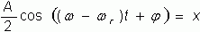
(5)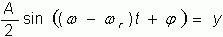
(6)The cut-off frequency of the LPF would be good enough approximately from ω/2 to ω in this case. Figure 1 explains the process of Equations (3) to (6).
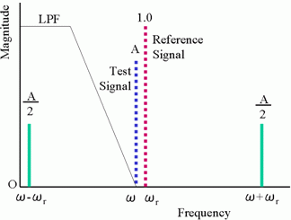
Figure 1 Spectrum Appearance
Now that you have sin() and cos() components of the frequency (ω-ωr)t+φ, you can calculate the instantaneous phase of the beat signal component as follows
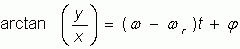
(7)If ωr is exactly equal to ω in Equation (7), only the phase component φ remains. If the test signal frequency is well known in advance, the reference should be set at exactly the same frequency. If the test signal is distributed in a certain frequency band, the reference should be settled as approximately the mid frequency of the band as shown in Figure 2.
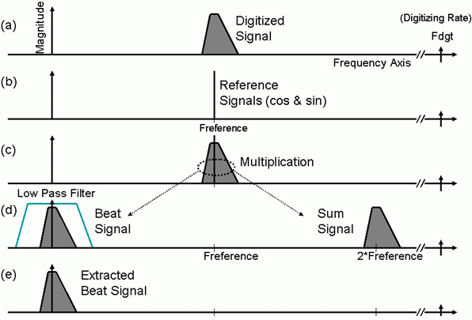
Figure 2 Spectrum Appearance
The reference signals of cos(ωrt) and sin(ωrt) are ideal sinusoidal waveforms generated in the computer. They can previously be calculated and stored in appropriate arrays for test throughput. The multiplication is a simple operation. The LPF processing is a convolution math with a finite impulse response (FIR) of the filter. The extracted beat frequency components, cos() and sin(), go to the arctan() that is also a math function. Finally the instantaneous phase of the beat is derived. This is the basic signal processing flow. Since the operation does not include FFT/IFFT, there is no restriction of 2n in terms of the number of data points. (If the data size meets 2n, you may want to apply FFT/IFFT method for filtering.)
Figure 3 depicts the data processing scheme as a block diagram.
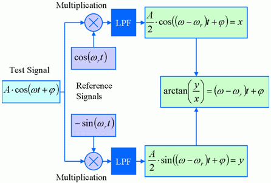
Figure 3 Mathematical Data Processing Sequence
The extracted instantaneous phase component looks like a linear function with time t as follows.
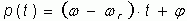
(8)If ωr is equal to ω, the phase offset φ remains. Then you can see the phase modulation. Analyzing the trend of φ can analyze the fluctuation of the clock pulse location.
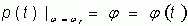
(9)If the test signal frequency is changing, ω is a function of time t. Then you can see the frequency modulation or fluctuation of the clock signal.
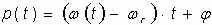
(10)This is the way changing frequency/phase can be measured. This method is the application of orthogonal demodulation, which is popular in RF and communication fields.
Experimental Results
PLL Lock-in Trend Analysis
In this section, you will see an interesting experimental result of the ODM. The device under test (DUT) is a PLL chip W183 of Cypress Semiconductor. Figure 4 shows the test circuit diagram.
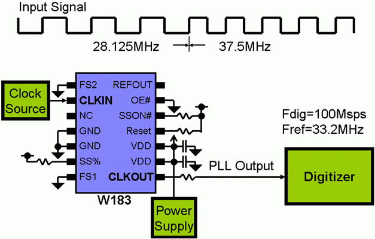
Figure 4 Experimental Test Circuit Diagram
The clock signal is supplied at "CLKIN" by a digital channel such as the Pin Scale 800. The input clock signal used in the experiment is depicted in Figure 4, starting from 28.125 MHz and suddenly changing its frequency to 37.5 MHz on-the-fly. So the DUT locks at 28.125 MHz firstly, and when the on-the-fly frequency change happens, the device tries to catch up the frequency change. The output "CLKOUT" is monitored by the MB-AV8 HF digitizer at the sampling rate of 100 Msps.
The captured waveform looks as Figure 5 upper graph. The area up to approximately 100 us is the waveform of 28.125 MHz, and the area more than 300us is the waveform of 37.5 MHz. The area between them is where the PLL is trying to catch up the abrupt frequency change. The line in the graph is too dense to see it is a sinusoidal waveform.
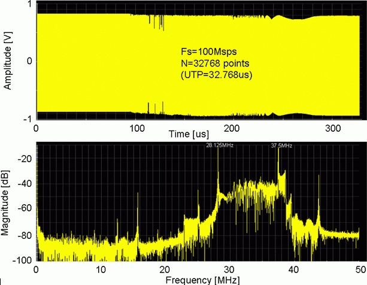
Figure 5: Captured Waveform and its Frequency Spectrum
The number of points (N) is 32768 = 215, but this is for the demonstration of the spectrum. Non-2n of N has no problem in ODM. The FFT is applied to the waveform to see its spectral appearance, which is shown in Figure 5 lower graph. Windowing is not applied here. You can see the peaks of 28.125 MHz and 37.5 MHz. The energy is localized at the area between the two peaks.
The data processing requires the reference signals of cos() and sin(). In this example, it should be in the middle of two peaks. Therefore the reference frequency is set as 33.2 MHz here. The cos() and sin() data arrays of 33.2 MHz sinusoidal waveform are created in the computer at the rate of 100 Msps as Figure 6. The size of the arrays is 32768 points.
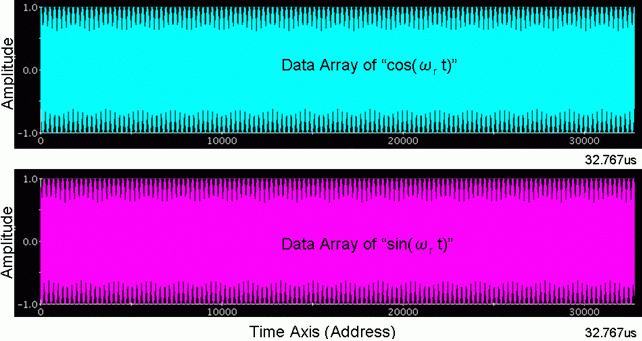
Figure 6: cos(33.2MHz) and sin(33.2MHz) Waveforms
The captured signal (Figure 5) is multiplied by the cos() and sin() waveforms respectively, showing in Figure 7.
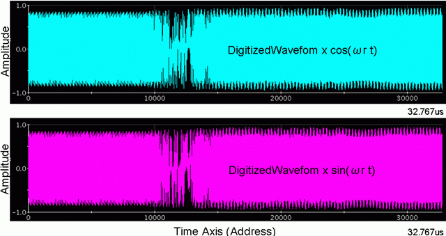
Figure 7: Digitized Waveforms Multiplied by cos() and sin()
Figure 8 explains the frequency spectra of the data processing. The test signal is split into the beat and the sum signals. Figure 9 shows the actual spectrum appearance. Actually the sum components are located at around 66 MHz so that what you see at around 30 to 40 MHz in Figure 9 are the aliased ones.
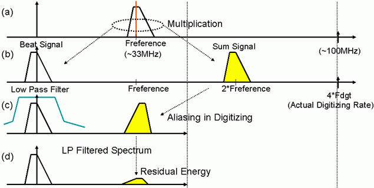
Figure 8: Aliasing of the Sum Component
The frequency response of the LPF applied is overlaid in Figure 9. The LPF processing is performed in the time domain with convolution of the finite impulse response (FIR)[a] array as Figure 10.
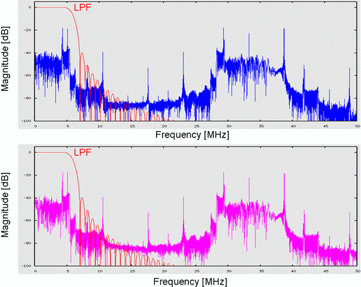
Figure 9: Frequency Spectra of Multiplied Waveforms
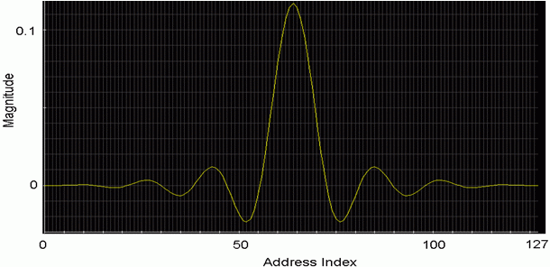
Figure 10: 128-point FIR Curve of LPF
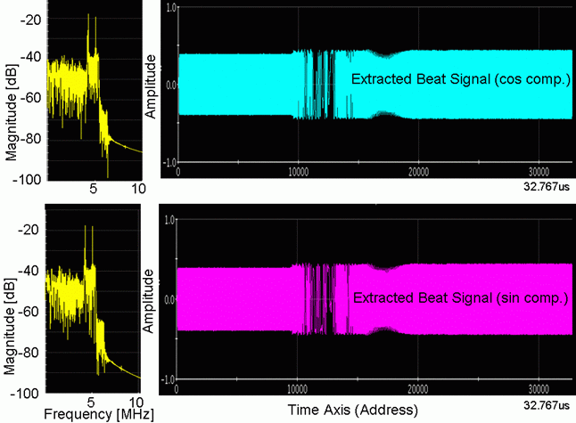
Figure 11: Filtered Spectrum and Waveforms
Figure 11 shows the extracted beat signals. Now that the cos() and sin() of the beat are separated, you can perform the arctangent to derive the instantaneous phase of the beat signal as Figure 12.
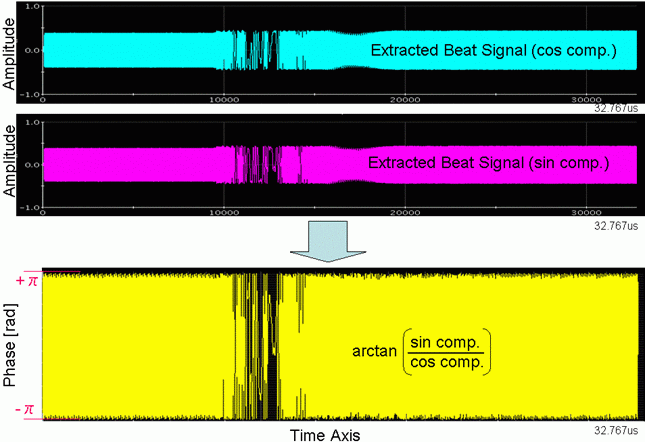
Figure 12: Arctangent Operation for Instantaneous Phase
The phase in Figure 12 is wrapped within the region from -π to π. Then the angle data array is un-wrapped and made it a single continuous curve as Figure 13.
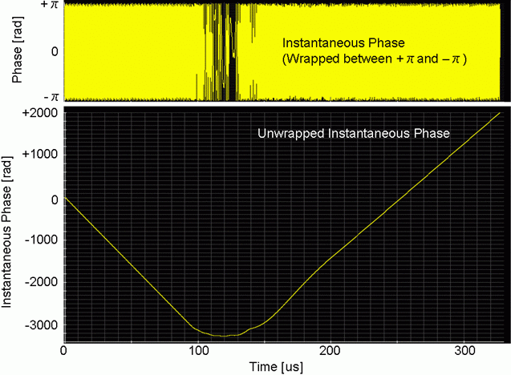
Figure 13: Instantaneous Phase Trend
The slope of the instantaneous phase curve means the frequency difference from the reference frequency. The negative slope means the signal frequency is lower than the reference frequency. And the positive slope means the signal frequency is higher than the reference frequency. Therefore the instantaneous phase curve can be interpreted into the frequency trend as shown in Figure 14 lower graph. The primitive frequency trend in Figure 14 is a little fluffy so that a simple moving average can improve it and the clear lock-in trend is revealed as Figure 15. Now you can figure out the starting frequency is 28.125 MHz and the final frequency is 37.5 MHz. The lock-in time can be calculated approximately 143 us here.
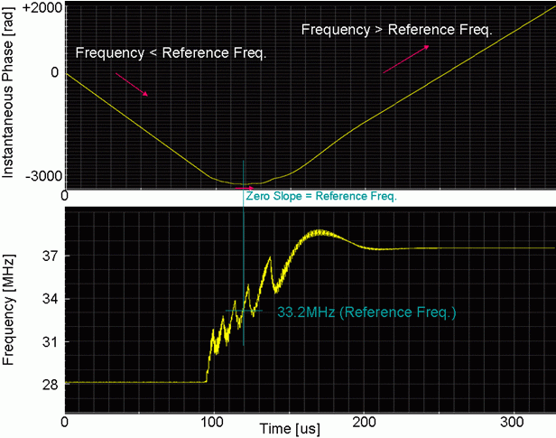
Figure 14: Slope of Instantaneous Phase to Frequency
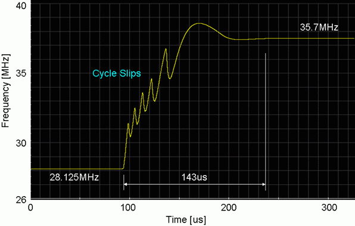
Figure 15: Smoothed Frequency Trend
Since author did not know the reality of PLL lock-in trend, the result of Figure 15 was different from what he had expected. Then he sent the data to the device manufacturer for confirmation, and they replied that the result was valid.
Cycle Slip
Several cusps can be seen in the trace of the frequency-sweeping period in Figure 15. PLL designers call it "cycle slips." The distinctive curve is related to the capability of PLL phase detector and charge pump during the process of minimizing phase difference between the input and output signals.
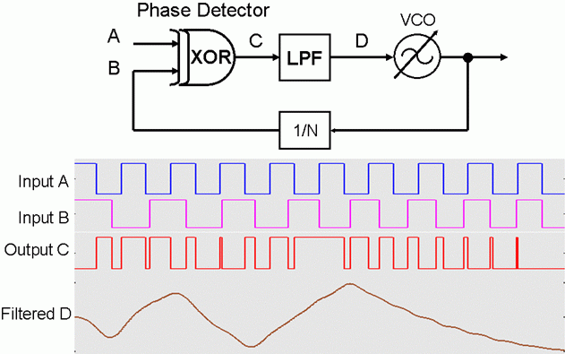
Figure 16: Mechanism of Cycle Slips
Figure 16 depicts a simple block diagram of a typical PLL. The phase detector compares the phase difference of the two input signals (Fa and Fb). For instance, an exclusive-OR logic is a primitive phase detector. As Figure 16 shows that output C is proportional to the phase difference of inputs A and B. Filtering the signal C by the LPF, signal D is generated. It is not a monotonic ramp, which contains many cusps. This is a very simple mechanism that cycle slips occur.
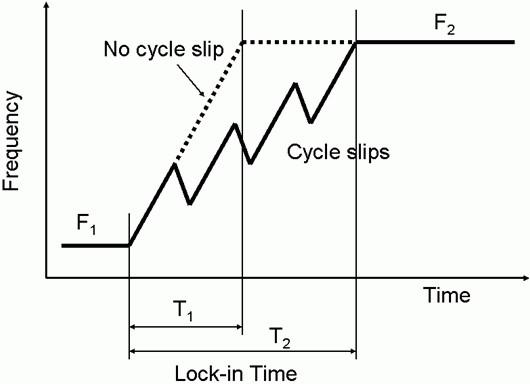
Figure 17: Cycle Slip Deteriorates Lock-in Time
When cycle slips occur during PLL lock-in period, the lock time gets longer as Figure 17 shows. (T2 vs. T1) PLL designers work hard to reduce cycle slips so that it is important for them to understand the lock-in profiles precisely.
In general, instantaneous frequency trend analysis is not easy to observe with regular time measurement instruments because they need a certain re-trigger interval while the target frequency is changing rapidly. Therefore cycle slips are usually discussed using simulation. Now ODM is very suitable for actual measurements. They can make a major contribution in designing PLL devices.
Reference
[a] The FIR can be created by yourself or you could find some nice tool on the Web. If you are interested in how to create a FIR curve, you can find it in an article of Newsletters.